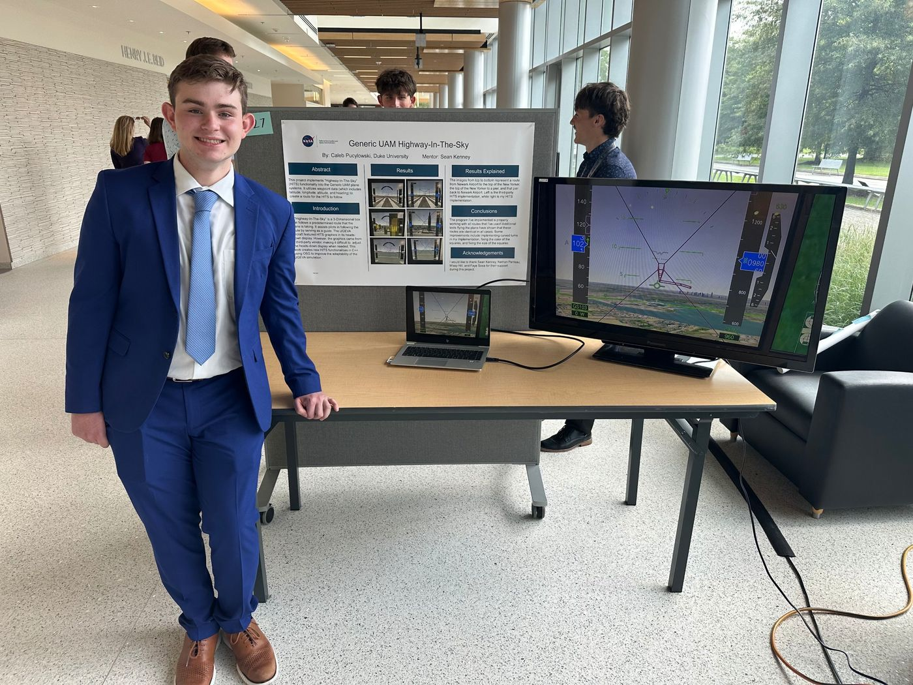
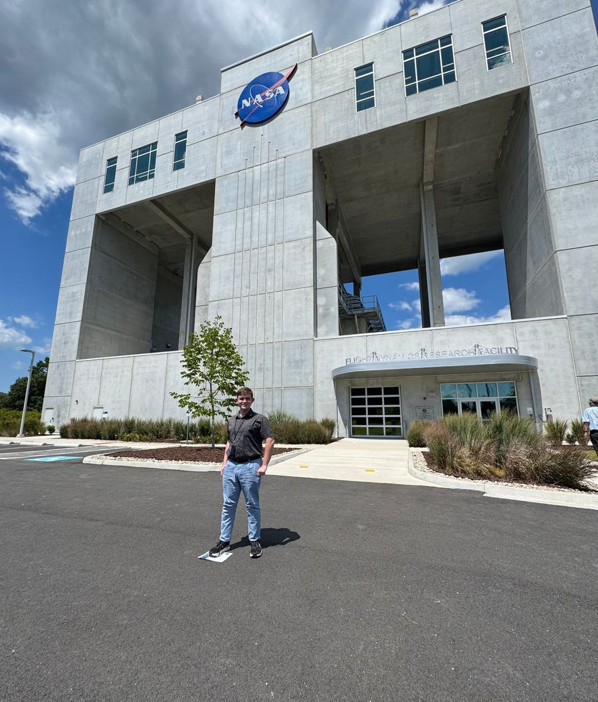
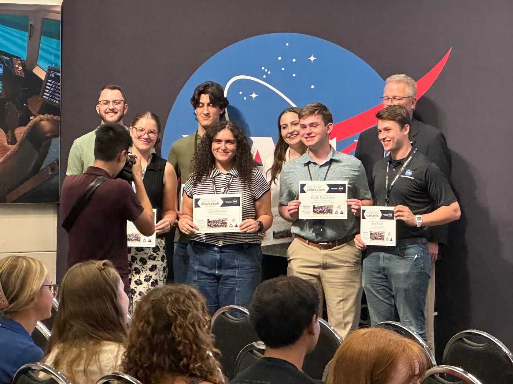
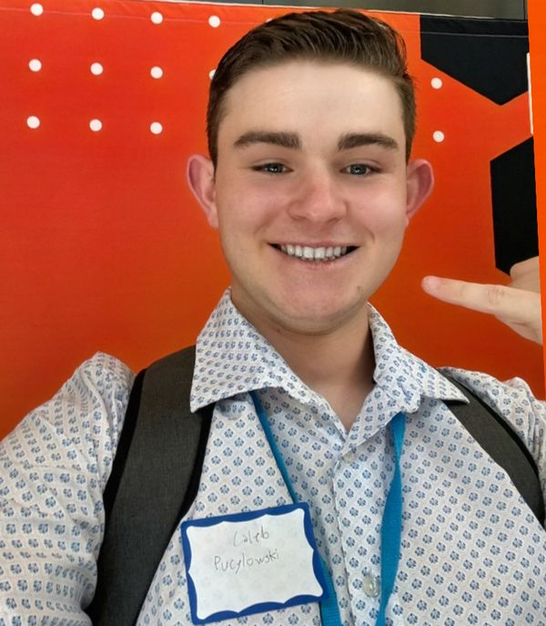
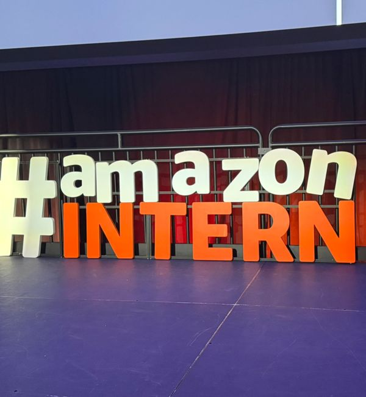
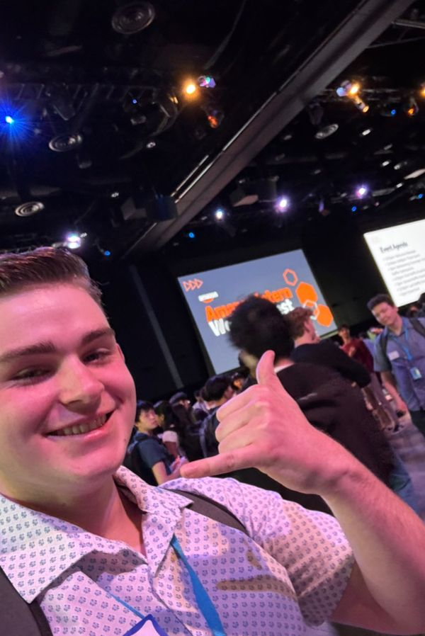
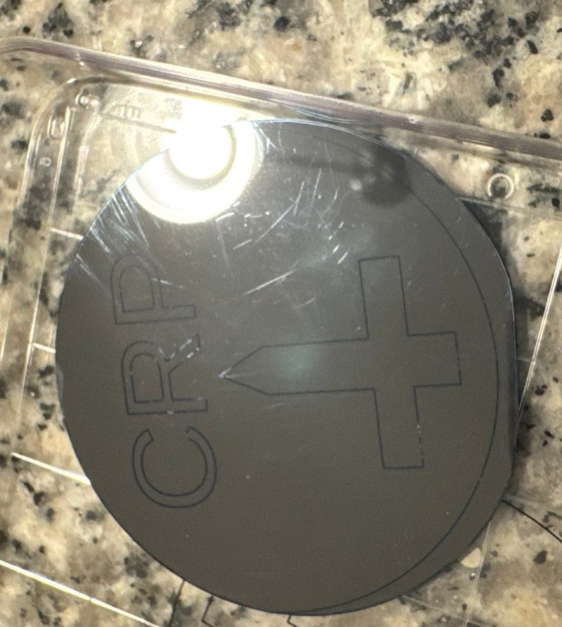
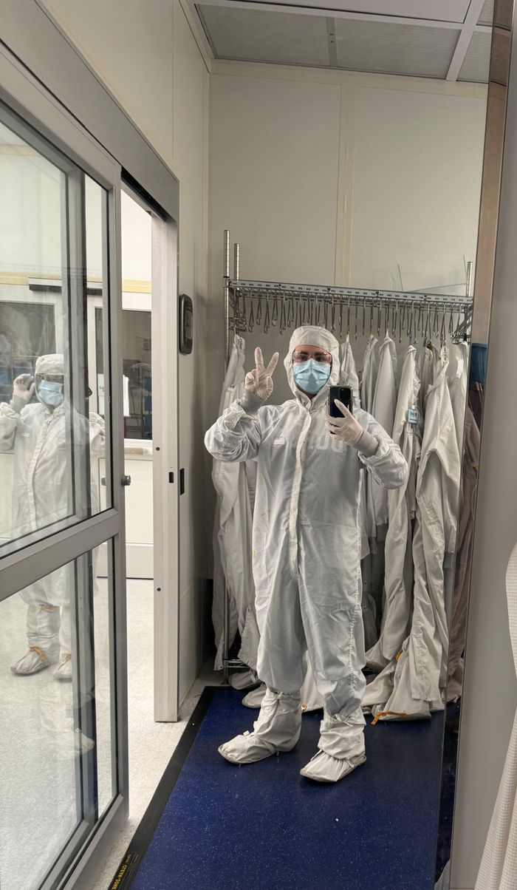
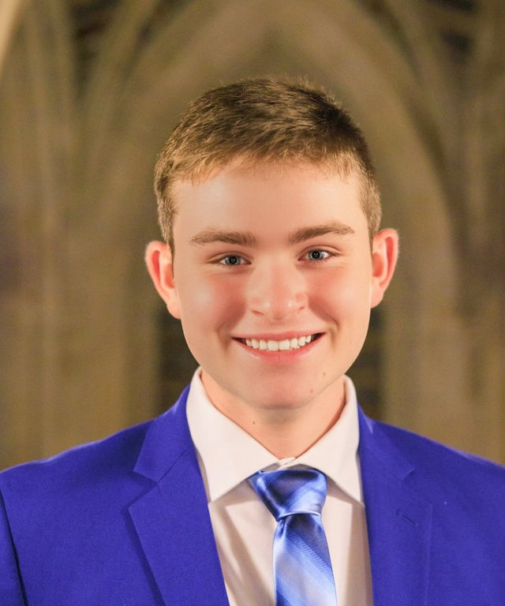
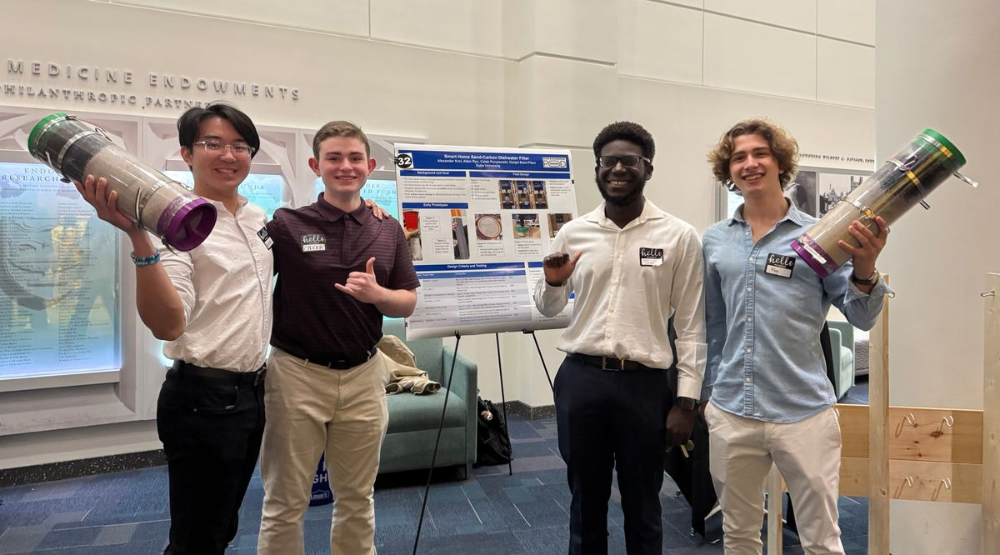

Duke University · Class of 2028ECE + Computer ScienceDurham, NC · Florida's Space Coast
Caleb Pucylowski
Engineer in training, working across software and hardware. I build systems that have to work in real time, from 3D flight-guidance graphics at NASA to a cloud service for Amazon's AI shopping assistant.
Background: a sketch of the “Highway in the Sky” guidance tunnel I built for NASA Langley's flight simulator.
Experience
Experience
Software Engineering Intern, NASA Langley Research Center
Jun–Aug 2026
Simulation Development & Analysis Branch · Hampton, VA
Built an in-house C++ “Highway in the Sky” display for a NASA urban air mobility (UAM) aircraft simulation: a 3D tunnel of boxes that guides the pilot along the planned route. It replaced graphics from a third-party vendor that were hard to modify.
Turned waypoint data (latitude, longitude, altitude, and heading) into real-time guidance on the primary-flight and navigation displays using OpenSceneGraph and OpenGL.
Flight tests on NASA's full-scale flight-deck simulator matched the vendor display on every route I flew.
Finished core development 2 weeks ahead of schedule and took the feature through critical design review, a live demo, and peer code review.
C++OpenSceneGraphOpenGLLinuxXML



At NASA Langley: presenting my display at the intern poster session (it's running on the monitor), outside the Flight Dynamics Research Facility, and receiving my certificate of completion.
Software Development Engineer Intern, Amazon
May–Aug 2025
Private Brands · Seattle, WA
Built an end-to-end escalation service for an AI shopping assistant in Java and TypeScript, using WebSockets to route conversations to human experts in real time.
Cut expert case-review time by 83% (30 minutes to 5) by attaching AI-generated summaries and full conversation history to every ticket.
Integrated AWS Lambda, API Gateway (GraphQL), and DynamoDB, wrote the design document, and shipped through Agile sprints and code review.
JavaTypeScriptAWSGraphQLDynamoDB



Amazon's intern events in Seattle, summer 2025.
Undergraduate Research Assistant, Duke Quantum Center
May 2025–May 2026
Developed and simulated quantum algorithms and circuits in Python with Qiskit and Cirq, and analyzed their error behavior on noisy quantum hardware.
Research Assistant, University of Maryland, Baltimore County
Jun–Aug 2024
Ran noisy quantum-system simulations in the Deffner Lab to measure error and decoherence in open quantum systems.
Projects
Projects
Bazaar Multiplayer Game Engine
Java · Gradle · JUnit 5 · Spring 2026
A Java engine for a multiplayer trading game, built with my brother for Duke's Software Engineering course. It has a rules engine, a referee that runs full games and removes players who break the rules, and AI players with swappable strategies.
LLM Fine-Tuning and Retrieval-Augmented Generation
Python · PyTorch · CUDA · Hugging Face · LoRA · Fall 2026
Two projects with language models for Applied Machine Learning, run on GPUs with CUDA. First, I fine-tuned Microsoft's 1.3-billion-parameter Phi-1.5 model with LoRA, training only 0.3% of its weights, to solve grade-school math word problems step by step. Afterward, it followed the required answer format 98% of the time on problems it hadn't seen.
Second, I built a retrieval-augmented generation (RAG) system. It turns 10,570 Wikipedia passages into embeddings, finds the passage most relevant to each question in about 10 ms, and gives it to the Phi-2 model as context. That raised question-answering accuracy from 21% to 58%.
In progress
Autonomous Patrol Robot
ROS 2 · Python · Kinova arm · Fall 2026
A ROS 2 robot, programmed in Python and built around a modified Kinova robotic arm for Intro to Robotics. It patrols an area, notices when someone comes near, and heckles them with spoken warnings until they leave. Then it goes back to its patrol route.
My midterm: programming the arm to write my initials, CRP, on a whiteboard (sped up 3×).In progress
Vengeful Glory
Unity · C# · 2D dungeon crawler · Team of 3 · Fall 2026
A dungeon crawler told from the other side. You play a side boss who is tired of being farmed for XP by the hero, so you leave your room, defeat other bosses, collect loot, and level up until you're strong enough to hunt the hero down.
I'm building it in Unity and C# with two teammates for Computer Game Design: combat with attack cooldowns, XP and item progression, enemies that are hostile or neutral depending on their intelligence, and dungeon zones that unlock with the items you find. Before this, I made two smaller games in PICO-8.
Operating Systems: added kernel features in C to xv6, a small teaching operating system that runs on RISC-V, covering system calls, virtual memory, threads, and the file system. I also built my own malloc/free heap allocator that splits and merges memory blocks, and a reader-writer lock with writer priority levels using pthreads.
Computer Architecture: designed a working 16-bit CPU from logic gates, with an 8-register file, an ALU, instruction decoding, memory, and keyboard and display I/O, and ran programs on it.
Computer Networks: wrote an HTTP client directly on TCP sockets, with optional TLS encryption, that times each stage of a web request.
Integrated Design Challenge Robot
Arduino · C++ · Sensors · Spring 2025
For Duke's first-year ECE design challenge, my partner and I programmed an Arduino robot that follows a course with line sensors, takes infrared temperature readings over I2C, trades data with the four other robots in our lab section over a serial link, and shows the results on an LCD. All five robots then run a coordinated celebration chosen by the combined scores.
KiCad · LabVIEW · Cleanroom fabrication · Fall 2026
For Microelectronic Devices & Circuits, I designed an etch pattern in KiCad, exported it as a Gerber file, and etched it into a silicon wafer in Duke's cleanroom: my initials and a sword. In a later lab, I used LabVIEW to control a power supply, automating the measurement sweeps and graphing the results.


Quantum Annealing Flight Scheduler
Python · D-Wave Ocean SDK · 2023–2024
Framed the problem of assigning aircraft to flights as a QUBO optimization, solved it on a quantum annealer, and compared the results with classical solvers.
QuestBridge National College Match ScholarQuestBridge
Generation Google ScholarGoogle
Amazon Future Engineer ScholarAmazon
Hispanic Scholarship Fund ScholarHispanic Scholarship Fund
MIT MITES Semester ScholarMassachusetts Institute of Technology, 2023
National Cyber League: Top 3% NationallyIndividual cybersecurity competition
Dean's List with DistinctionDuke University, Fall 2024
National Merit Commended ScholarNational Merit Scholarship Corporation
About

Raised on the Space Coast
I grew up near Cape Canaveral. In high school, I programmed and designed robots for my FIRST Robotics team, volunteered with the team for several years at the Kennedy Space Center International Academy, and placed in the top 3% nationally in the National Cyber League cybersecurity competition. Through dual enrollment, I earned an associate degree with a 4.0 and co-founded a MATLAB club at Florida Tech before starting at Duke.
At Duke, I'm double majoring in Electrical & Computer Engineering and Computer Science with a minor in math. My first-year engineering design team built a sand-and-carbon filter that cleans dishwater so the Duke Smart Home, a sustainable house on campus, can reuse it in its garden. Outside class, I row for Duke Club Rowing and serve as Vice President of Marketing & Communications for Duke Engineering Student Government.

My design team with our Smart Home dishwater filters at the Duke Engineering design showcase.
Contact
Get in touch
I'd be glad to hear about internship openings for Summer 2027.